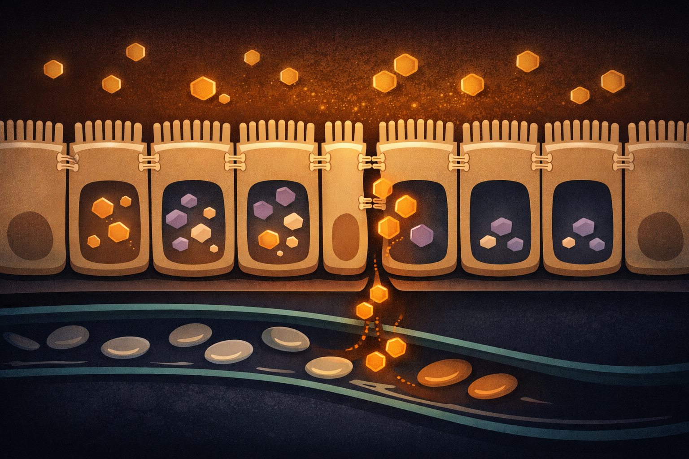
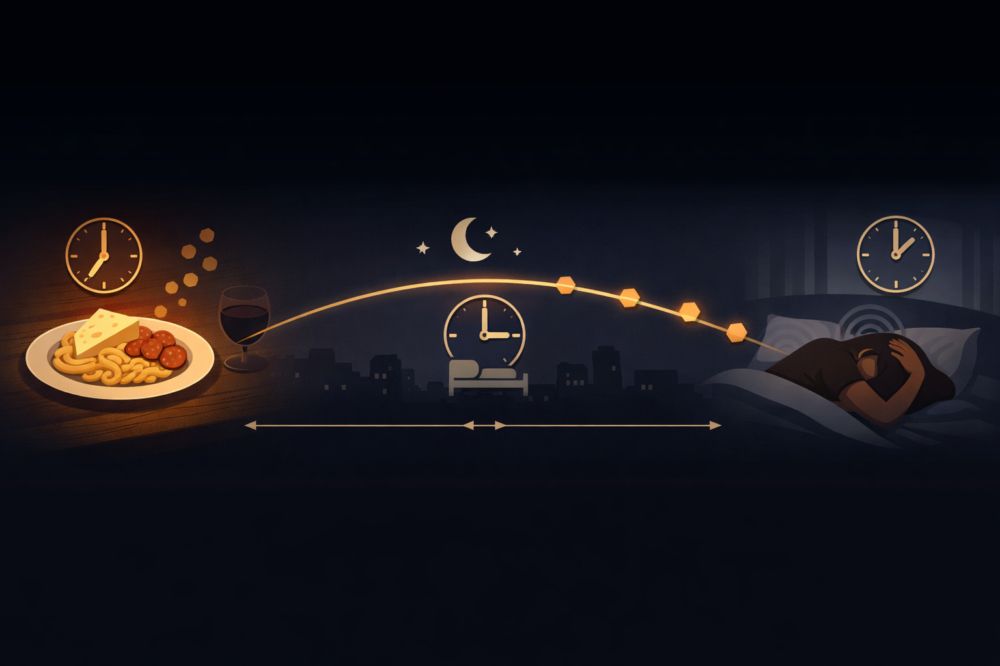

By Rustam Iuldashov
30 years lived experience with chronic migraine | Sources: 17 peer-reviewed references including Open Access Macedonian Journal of Medical Sciences (systematic review, n=322), Headache (case-control, n=210), Food Production, Processing and Nutrition (systematic review, 2024) | Last updated: March 2026
Medical Review: This content is based on peer-reviewed research from StatPearls/NCBI Bookshelf, Open Access Macedonian Journal of Medical Sciences, Headache, Neurological Sciences, Journal of Neural Transmission, Pharmacological Reviews, Food Production Processing and Nutrition, Medical Clinics of North America, and Clinical Journal of Pain.
Important Notice: This article is for informational purposes only and does not replace professional medical advice. The author is not a licensed physician or healthcare professional. Always consult your doctor before making significant dietary changes, particularly if you take MAOI medications.
Key Takeaways
- Tyramine is a natural compound produced when proteins ferment, age, or cure — not a food additive. Aged cheese, salami, soy sauce, and sauerkraut are the biggest sources.[1, 13, 14]
- Your body normally neutralizes tyramine through the enzyme MAO-A before it enters the bloodstream. This system works perfectly for most people.[3, 4]
- Genetics determine your risk. MAO-A gene variants — particularly MAOA-uVNTR and T941G — can reduce enzyme efficiency, allowing tyramine to reach circulation and trigger migraine.[6, 7]
- Only about 7% of migraineurs consistently identify tyramine as a personal trigger. Blanket avoidance is unnecessary for most.[12]
- The 24-hour delay is the main reason tyramine is hard to catch. Track everything you eat in the 48 hours before an attack.[16]
- A 4-week elimination and reintroduction protocol is the most reliable way to confirm personal tyramine sensitivity — ideally supervised by a healthcare provider.[16, 17]
The Discovery That Started in a Pharmacy
A British pharmacist in the 1950s noticed something his wife’s doctors had missed: every time she ate cheese while taking her new antidepressant, a migraine followed. He wrote it up. Physicians dismissed it. He kept pushing.
He was right.
The drug was a monoamine oxidase inhibitor — an MAOI. And what his wife was living through every time she reached for cheddar turned out to reveal something fundamental about how certain foods wage chemical warfare on the migraine-prone brain.
The compound at the center of it all: tyramine.
What Tyramine Actually Is
Tyramine isn’t added to food. It isn’t a preservative or a flavor agent. It’s a byproduct of time.
When bacteria break down the amino acid tyrosine — found naturally in all protein-rich foods — they produce tyramine through a process called decarboxylation.[1] The older, more fermented, more aged the food, the higher the load. A fresh block of mozzarella has almost none. A wedge of Stilton left at room temperature for a few hours can carry a meaningful amount. The same piece of meat you ate fresh on Monday becomes a different food by Wednesday.
Tyramine belongs to a class of molecules called biogenic amines — small compounds with outsized effects on the nervous system.[2] It doesn’t stimulate your system directly. Instead, it acts as a trigger: it forces the release of norepinephrine — your fight-or-flight neurotransmitter — from nerve endings, causing blood vessels to contract and heart rate to climb.[3]
For a brain already wired for migraine, that’s a dangerous cascade.
Your Body’s Tyramine Firewall — and What Happens When It Leaks
Under normal circumstances, your body handles tyramine quietly, invisibly. The gastrointestinal tract and liver intercept it before it ever reaches the bloodstream, using an enzyme called monoamine oxidase A — MAO-A — to convert it into an inactive metabolite.[4]
This first-pass detoxification is remarkably efficient. Most people can eat a plate of aged cheese, down a glass of red wine, and feel nothing. Their MAO-A system degrades the tyramine before it can cause trouble.
But for some people, that firewall leaks.
And the reason is written in their DNA.

The Genetics Behind Tyramine Sensitivity
Your MAO-A gene comes in versions. Some produce an enzyme that works fast. Others produce a sluggish variant that struggles to break down tyramine — and related molecules like serotonin and norepinephrine — at a normal rate.
Researchers have identified several key variants in the MAO-A gene, including the widely-studied MAOA-uVNTR promoter region and the T941G polymorphism, both associated with reduced enzyme activity.[5, 6] In one case-control study of 210 participants, the T941G variant was independently associated with migraine susceptibility — carriers had more than twice the risk of the condition compared to those without it.[7]
For people with these slower variants, tyramine slips through the gut lining and enters circulation. What follows is a predictable chain reaction[8]:
- Tyramine floods sympathetic nerve endings and triggers mass norepinephrine release
- Blood vessels constrict sharply
- Rebound vasodilation follows
- The trigeminal nerve — already hypersensitive in most migraineurs — fires
The migraine arrives. Often 12 to 24 hours after the meal.
This same mechanism explains why people taking MAOI antidepressants face serious, sometimes life-threatening reactions to high-tyramine foods. MAOIs intentionally block MAO-A to treat depression. Strip away that enzyme entirely, and even a small tyramine load from food can trigger a severe adrenergic storm. Clinical thresholds are stark: 6–10 mg of tyramine causes a mild response in MAOI patients; 10–25 mg can precipitate a hypertensive crisis.[9, 10]
⚠️ When to Seek Emergency Care
If you take MAOI antidepressants (phenelzine, tranylcypromine, isocarboxazid) and experience any of the following after eating high-tyramine foods — call emergency services immediately:
- Sudden severe headache described as “the worst of your life”
- Rapid blood pressure spike with chest tightness or pounding pulse
- Nausea, vomiting, profuse sweating, or visual changes
- Confusion, extreme agitation, or neck stiffness
These symptoms may indicate a hypertensive crisis. This is a medical emergency — do not wait to see if it passes.
Even without MAOIs: a migraine accompanied by fever, stiff neck, confusion, or sudden severe “thunderclap” onset warrants immediate emergency evaluation to rule out serious neurological causes.
How Common Is Tyramine Sensitivity in Migraine?
Here’s the part that surprises most people: tyramine sensitivity is real, but it’s not the default.
A 2023 systematic review examined seven studies involving 322 people with migraine who consumed tyramine directly — via food or capsule. Between 17% and 50% developed headaches afterward. But placebo groups showed headache rates of 0–42% too.[11] The review concluded that the relationship “remains unclear” — existing research has real methodological limitations, including inconsistent blinding and small sample sizes.
Larger real-world data tells a similarly sobering story. Tracking data from the N1-Headache platform — one of the largest ongoing migraine studies — found that only about 7% of migraineurs consistently identify tyramine as a trigger. Around 10% actually report that tyramine-containing foods seem to protect against attacks. The remaining majority show no consistent pattern either way.[12]
The evidence in context: A 2023 systematic review (n=322) found headache occurred in 17–50% of people after tyramine ingestion — but placebo groups showed rates of 0–42%.[11] Real-world tracking suggests only ~7% of migraineurs consistently identify tyramine as a personal trigger.[12] The effect is real for a subset; testing is essential before restricting your diet.
The conclusion: tyramine is a genuine trigger for a minority of migraineurs — specifically those carrying MAO-A gene variants that compromise the enzymatic firewall. If you’re in that group, the effect can be dramatic and consistent. If you’re not, eliminating aged cheese won’t move the needle.
The hard part is finding out which group you’re in.
The Tyramine Food Map
If you’re testing whether tyramine matters for you personally, you need to know which foods carry the heaviest load.[13, 14]
Dairy. Aged cheeses are the main culprits: Stilton, blue, cheddar, Parmesan, Gruyère, Camembert, Swiss, feta, provolone. Fresh cheeses — ricotta, cottage, cream cheese, fresh mozzarella — contain very little. This is a meaningful distinction. It’s not cheese that’s the problem; it’s aged cheese.
Meats. Dry, cured, smoked, or fermented: salami, pepperoni, summer sausage, liverwurst, smoked fish. Fresh meat bought and cooked the same day is low in tyramine. The same cut, left in the refrigerator for three days, is a different story.
Fermented foods. Sauerkraut, kimchi, miso, tempeh, certain forms of tofu. Soy sauce, fish sauce, teriyaki sauce, and bouillon-based condiments concentrate tyramine significantly.
Alcohol. Tap beer and home-brewed beer are high. Red wine, vermouth, and sherry sit in the moderate range. Bottled or canned beer and distilled spirits — vodka, gin, rum — are generally much lower.
Overripe fruit. Ripe bananas, avocados, and pineapple accumulate tyramine as they age. The browner the banana, the higher the load.
The freshness rule: Tyramine is not destroyed by cooking or heat.[15] It rises with time, not temperature. A chicken liver bought fresh has little tyramine. The same liver stored for three days has considerably more. Every extra day in the refrigerator changes the chemistry of your food.
The 24-Hour Delay Trap
One reason tyramine is so hard to pin down as a personal trigger: the migraine it causes often doesn’t arrive until 12–24 hours after the meal.[16]
That’s long enough to break the mental connection entirely. The Parmesan-covered pasta from Tuesday dinner becomes invisible by the time Wednesday’s migraine strikes. Stress gets the blame. Weather gets the blame. Sleep gets the blame. The meal that set the cascade in motion the day before goes unnoticed.
This is why standard migraine diaries often miss dietary triggers. You need to log everything you eat in the 48 hours preceding an attack — not just what you had right before it. Migraine Companion was built with exactly this pattern in mind: its food and trigger logging architecture is designed to surface delayed correlations that a paper diary — or memory alone — will almost always miss.

How to Find Out If Tyramine Is Your Trigger
The most reliable personal test is a structured elimination and reintroduction protocol, run ideally with a neurologist or dietitian:
Weeks 1–2: Eliminate all high-tyramine foods completely. Log every headache with its exact timing.
Weeks 3–4: Systematically reintroduce one food category at a time — aged cheese one week, cured meats the next. Track any attacks appearing within 48 hours.
If a consistent pattern emerges — the same category reliably preceded attacks — you’ve identified a real personal trigger. If attacks continue unchanged during elimination, or return inconsistently with reintroduction, tyramine probably isn’t your driver.
Food triggers almost never act alone. Tyramine may only cross your threshold when combined with other stressors — poor sleep, hormonal shifts, accumulated stress. The bucket model of migraine: factors pile up until the brain’s threshold is breached. No single trigger overflows it alone.
After 30 years living with migraine, I can say this firsthand: the triggers that seem random often follow a logic. You just need the right tracking system to see it.
Practical Swaps That Don’t Require Giving Up Everything
If tyramine does show up as your trigger, complete elimination of fermented and aged foods isn’t necessary for most people. Targeted swaps usually do the job.[17]
Safe Substitutions
- Replace aged cheddar or blue cheese with fresh mozzarella, ricotta, or cottage cheese
- Buy meat fresh and cook it the same day — don’t rely on three-day-old refrigerator leftovers
- Swap soy sauce for coconut aminos, which carry far less tyramine
- Choose bottled beer or white wine over tap beer or red wine, if you drink at all
- Refrigerate food immediately and date everything you store — this single habit substantially reduces accidental exposure
- Treat leftovers as suspect after 24 hours in the refrigerator
The Goal
Not a tyramine-free life. It’s knowing your own threshold — and not accidentally crossing it.
⚕️ Important Medical Disclaimer
This article is for informational and educational purposes only and does not constitute medical advice, diagnosis, or treatment. The author, Rustam Iuldashov, is not a licensed physician, neurologist, or healthcare professional. He is a patient advocate with 30 years of personal experience living with chronic migraine.
All clinical claims in this article are sourced from peer-reviewed research published in indexed medical journals. Study designs and sample sizes are noted where applicable.
Always consult a qualified healthcare provider for questions about your individual health, migraine treatment, or dietary changes.
Special note on MAOIs: If you are currently prescribed a monoamine oxidase inhibitor (MAOI), tyramine restriction is not optional — it is a medically necessary dietary protocol. Do not rely on this article as a substitute for clinical dietary counseling from your prescribing physician.
References
- Sadighara P, Bekheir SA, Shafaroodi H, et al. “Tyramine, a biogenic agent in cheese: amount and factors affecting its formation, a systematic review.” Food Production, Processing and Nutrition 6, 30 (2024). doi:10.1186/s43014-024-00223-x. Study design: Systematic review.
- Gainetdinov RR, Hoener MC, Berry MD. “Trace Amines and Their Receptors.” Pharmacological Reviews 70(3):549–620 (2018). doi:10.1124/pr.117.015305. Study design: Review. n=N/A.
- Hussain LS, Reddy V, Maani CV. “Biochemistry, Tyramine.” StatPearls (2022). NCBI Bookshelf NBK563197. Study design: Narrative review.
- Shulman KI, Herrmann N, Walker SE. “Current place of monoamine oxidase inhibitors in the treatment of depression.” CNS Drugs 27(10):789–97 (2013). doi:10.1007/s40263-013-0097-3. Study design: Review.
- MedlinePlus Genetics. “MAOA gene.” U.S. National Library of Medicine (2024). medlineplus.gov/genetics/gene/maoa. Study design: Gene summary.
- Pivac N, Knezevic J, Mustapic M, et al. “Monoamine oxidases A and B gene polymorphisms in migraine patients.” European Neuropsychopharmacology 15(1) (2005). PMID:15694196. Study design: Case-control. n=260.
- Kusumi M, Kawamoto Y, Suzuki Y, et al. “MAOA, MTHFR, and TNF-β gene polymorphisms and personality traits in the pathogenesis of migraine.” (2012). PMID:22193458. Study design: Case-control. n=210.
- D’Andrea G, Nordera GP, Perini F, et al. “Biochemistry of neuromodulation in primary headaches: focus on anomalies of tyrosine metabolism.” Neurological Sciences 28 Suppl 2:S94–6 (2007). doi:10.1007/s10072-007-0750-4. Study design: Review.
- Gillman PK. “A reassessment of the safety profile of monoamine oxidase inhibitors: elucidating tired old tyramine myths.” Journal of Neural Transmission 125(11):1707–17 (2018). doi:10.1007/s00702-018-1932-y. Study design: Review.
- Edinoff AN, Nix CA, Hollier J, et al. “Monoamine Oxidase Inhibitors (MAOIs).” StatPearls (2025). NCBI Bookshelf NBK539848. Study design: Narrative review.
- Sudharta H, Darmawan O, Barus JFA. “Tyramine Ingestion and Migraine Attack: A Systematic Review.” Open Access Macedonian Journal of Medical Sciences 11(F):156–162 (2023). doi:10.3889/oamjms.2023.11484. Study design: Systematic review. n=322.
- N1-Headache Platform / Migraine Trust Population Data. “Is tyramine a migraine trigger?” N1-Headache (2023). n1-headache.com. Study design: Real-world observational.
- National Headache Foundation. “Low-Tyramine Diet for Individuals with Headache or Migraine.” (2024). headaches.org. Study design: Clinical guideline.
- Fiedorowicz JG, Swartz KL. “The role of monoamine oxidase inhibitors in current psychiatric practice.” Journal of Clinical Psychiatry 65(11):1556–66 (2004). PMID:15554752. Study design: Review.
- Marengo J. “Tyramine-Free Foods: MAOIs and Diet.” Healthline (2023). Clinically reviewed. Study design: Clinical guidance.
- Sun-Edelstein C, Mauskop A. “Foods and supplements in the management of migraine headaches.” Clinical Journal of Pain 25(5):446–452 (2009). doi:10.1097/AJP.0b013e31819a6f65. Study design: Review.
- Martin VT, Behbehani MM. “Toward a rational understanding of migraine trigger factors.” Medical Clinics of North America 85(4):911–941 (2001). doi:10.1016/S0025-7125(05)70351-4. Study design: Review.

How We Create Content
- Peer-reviewed sources only. Food Production Processing and Nutrition, Pharmacological Reviews, StatPearls/NCBI Bookshelf, CNS Drugs, MedlinePlus Genetics, European Neuropsychopharmacology, Neurological Sciences, Journal of Neural Transmission, Open Access Macedonian Journal of Medical Sciences, Journal of Clinical Psychiatry, Clinical Journal of Pain, Medical Clinics of North America, Headache.
- Study transparency. Study design and sample sizes noted for all clinical references.
- Source verification. All claims backed by numbered references with DOI links.
- Experience + Science. 30 years personal migraine experience combined with peer-reviewed evidence.
- Regular updates. Articles reviewed when significant new research emerges.
- No conflicts of interest. No funding from pharmaceutical companies, food manufacturers, or supplement brands.
The 24-Hour Pattern Is Hard to See Without the Right Tool
Tyramine attacks arrive a full day after the trigger meal. Migraine Companion logs what you eat and surfaces delayed patterns that a paper diary — or memory alone — will miss.
Last reviewed: March 2026
Next scheduled review: September 2026